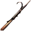

Багор
Предметы / С заданий
Открыть в интерактивной вики →
| Вес | 10 |
|---|---|
| Цена | 3 000 |
Описание

Применение
|
Как добыть
| Можно купить у Верштейна во время активного Ежедневное задание Бычок Стаськи. |

Открыть в интерактивной вики →
| Вес | 10 |
|---|---|
| Цена | 3 000 |
|
| Можно купить у Верштейна во время активного Ежедневное задание Бычок Стаськи. |